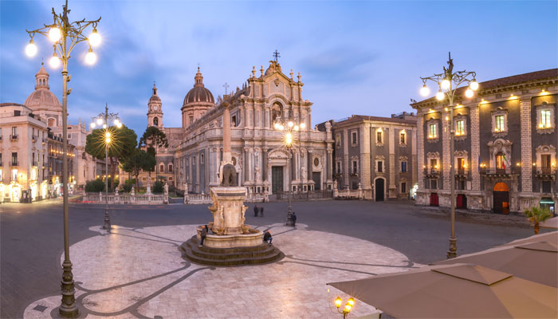

Il cuore barocco della città.
Piazza Duomo rappresenta il centro storico e simbolico di Catania. Dominata dalla Cattedrale di Sant’Agata e dalla Fontana dell’Elefante, è uno spazio che racconta la storia e la rinascita della città dopo il terremoto del 1693. La piazza è dominata dalla Cattedrale di Sant’Agata, dedicata alla patrona della città, e si apre in uno spazio scenografico tipico del barocco siciliano.
Dal punto di vista urbanistico, la piazza è progettata in modo scenografico, con una forte armonia barocca che valorizza la monumentalità degli edifici. L’insieme crea un effetto teatrale tipico delle città siciliane ricostruite nel Settecento.
Tra gli elementi principali spicca la Fontana dell’Elefante, conosciuta dai catanesi come “u Liotru”, simbolo della città, oltre al Palazzo degli Elefanti, sede del municipio. L’insieme crea un equilibrio tra funzione religiosa e civile.
Oggi la piazza è un punto nevralgico per il turismo e la vita cittadina: ospita eventi, celebrazioni religiose, manifestazioni pubbliche e rappresenta uno dei luoghi più frequentati della città.
